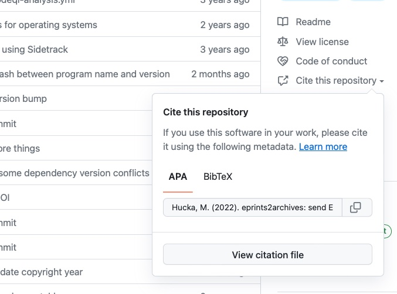
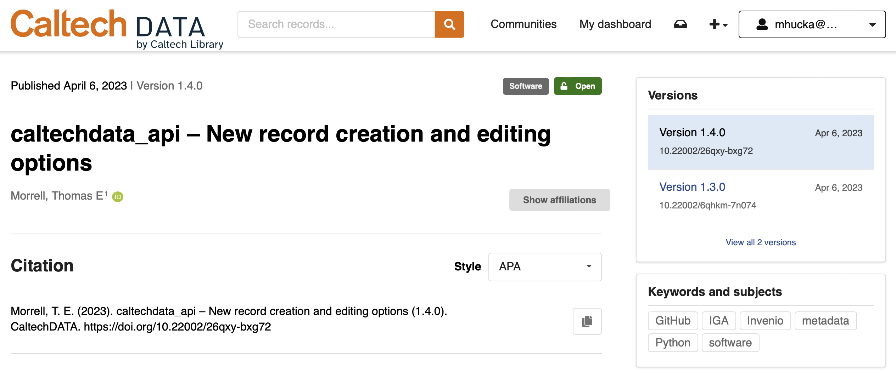

Getting the most out of IGA¶
Data and software archived in a repository need to be described thoroughly and richly cross-referenced in order to be widely discoverable by other people. As mentioned in the section on metadata sources, IGA by default constructs a metadata record using information it gathers from the software release, the GitHub repository, the GitHub API, and various other APIs as needed. This section provides more information about that process and offers guidance for how to help IGA produce good metadata.
Use CodeMeta or CFF files?¶
Should you use one or the other, or both? The answer turns out to be: use both. They don’t overlap completely in their content, they serve different purposes, and they are used differently by different software tools.
The purpose of a CITATION.cff is to let others know how to correctly cite your software or data set. GitHub makes use of CITATION.cff files: when you put a CITATION.cff file in the default branch of your repository, GitHub automatically creates a link labeled Cite this repository in the right sidebar of the repository landing page. Here is an example:

CITATION.cff file in the default branch of a repository, it adds a "Cite this repository" menu item in the right-hand sidebar. Clicking the item reveals information about how to cite the software.Conversely, a codemeta.json file is a way to describe a software project in machine readable form, for purposes of discovery, indexing, preservation, reuse, and attribution. It is thus more general and somewhat more comprehensive than a CITATION.ff file.
Which is more important?¶
IGA relies most on the codemeta.json file. It considers information sources in the following order:
The metadata provided by GitHub for a release is used as the primary source of metadata for certain information that is tightly coupled to the release, namely the description of the release and the version tag name.
Provided that a
codemeta.jsonfile exists in the repository and the relevant data fields are present in the file, it is used as the primary source for all other metadata, except for metadata that is only defined inCITATION.cffor the GitHub repository. (In particular, the resource type – software versus data set – is only defined in aCITATION.cfffield, and the role of “contact” is only explicitly defined in theCITATION.cffformat.)Provided that a
CITATION.cfffile exists in the repository and the relevant data fields are present in the file, it is used as a secondary source of metadata if there is nocodemeta.jsonin the repository or it lacks certain fields. (It is also the primary source for a couple of fields that have no equivalent anywhere else, as noted above.)The metadata provided by GitHub for the repository is used as a tertiary source of information if neither
codemeta.jsonnorCITATION.cfffiles are provided, or IGA is invoked with the flag--all-metadata. (See the section on Usage.)
How can you create them?¶
codemeta.json and CITATION.cff files are text files, and can be written by hand in a text editor. However, codemeta.json is more difficult to write by hand because of the JSON-LD syntax it uses, and in both cases, it is easier if you can use a software tool to generate the files. Here are some options available at this time:
The main CodeMeta generator
The codemetar package for R
The CodeMetaPy package for Python
The CFFINIT online tool for
CITATION.cff
Example codemeta.json file¶
To give a sense for what a codemeta.json file looks like, here is the one for an early version of IGA itself:
{
"@context": "https://doi.org/10.5063/schema/codemeta-2.0",
"@type": "SoftwareSourceCode",
"name": "IGA: InvenioRDM GitHub Archiver",
"description": "The InvenioRDM GitHub Archiver (IGA) lets you automatically archive GitHub software releases in an InvenioRDM repository.",
"version": "0.0.7",
"datePublished": "2023-04-25",
"dateCreated": "2022-12-07",
"author": [
{
"@type": "Person",
"givenName": "Michael",
"familyName": "Hucka",
"affiliation": "California Institute of Technology Library",
"email": "mhucka@caltech.edu",
"@id": "https://orcid.org/0000-0001-9105-5960"
}
],
"maintainer": [
{
"@type": "Person",
"givenName": "Michael",
"familyName": "Hucka",
"affiliation": "California Institute of Technology Library",
"email": "mhucka@caltech.edu",
"@id": "https://orcid.org/0000-0001-9105-5960"
}
],
"funder": {
"@id": "https://ror.org/05dxps055"
"@type": "Organization",
"name": "California Institute of Technology Library",
}
"copyrightHolder": [
{
"@id": "https://ror.org/05dxps055"
"@type": "Organization",
"name": "California Institute of Technology",
}
],
"copyrightYear": 2023,
"license": "https://github.com/caltechlibrary/iga/blob/main/LICENSE",
"isAccessibleForFree": true,
"url": "https://github.com/caltechlibrary/iga",
"codeRepository": "https://github.com/caltechlibrary/iga",
"readme": "https://github.com/caltechlibrary/iga/blob/main/README.md",
"issueTracker": "https://github.com/caltechlibrary/iga/issues",
"softwareHelp": "https://caltechlibrary.github.io/iga",
"releaseNotes": "https://github.com/caltechlibrary/iga/blob/main/CHANGES.md",
"downloadUrl": "https://github.com/caltechlibrary/iga/archive/main.zip",
"relatedLink": "https://pypi.org/project/iga",
"programmingLanguage": {
"@type": "ComputerLanguage",
"name": "Python",
"version": "3.9",
"url": "https://www.python.org/"
},
"keywords": [
"software",
"science",
"archiving",
"archives",
"preservation",
"source code",
"source code archiving",
"source code preservation",
"code preservation",
"automation",
"reproducibility",
"research reproducibility",
"InvenioRDM",
"Invenio",
"GitHub",
"GitHub Actions",
"GitHub Automation"
],
"developmentStatus": "active",
}
Example CITATION.cff file¶
To give a sense for what a CITATION.cff file looks like, here is the one for an early version of IGA:
cff-version: 1.2
message: "If you use this software, please cite it using these metadata."
title: "InvenioRDM GitHub Archiver"
authors:
- family-names: Hucka
given-names: Michael
affiliation: "Caltech Library"
orcid: "https://orid.org/0000-0001-9105-5960"
version: "0.0.7"
abstract: "The InvenioRDM GitHub Archiver (IGA) lets you automatically archive GitHub software releases in an InvenioRDM repository."
repository-code: "https://github.com/caltechlibrary/iga"
type: software
url: "https://caltechlibrary.github.io/iga"
license-url: "https://github.com/caltechlibrary/iga/blob/main/LICENSE"
keywords:
- "archiving"
- "archives"
- "preservation"
- "source code"
- "source code archiving"
- "source code preservation"
- "code preservation"
- "automation"
- "reproducibility"
- "research reproducibility"
- "InvenioRDM"
- "Invenio"
- "GitHub"
- "GitHub Actions"
- "GitHub Automation"
date-released: "2023-04-25"
How are they used by IGA?¶
The metadata records needed by InvenioRDM are expressed in JSON format with certain required metadata fields defined by InvenioRDM. The main metadata portion of an InvenioRDM record looks like this:
"metadata": {
"additional_descriptions": [ ... ],
"additional_titles": [ ... ],
"contributors": [ ... ],
"creators": [ ... ],
"dates": [ ... ],
"description": "...",
"formats": [ ... ],
"funding": [ ... ],
"identifiers": [ ... ],
"languages": [ ... ],
"locations": { ... },
"publication_date": "...",
"publisher": "...",
"references": [ ... ],
"related_identifiers": [ ... ],
"resource_type": { ... },
"rights": [ ... ],
"sizes": [ ... ],
"subjects": [ ... ],
"title": "...",
"version": "...",
}
It can be helpful to have a sense for how IGA computes the values of the fields above. The following summarizes the scheme, while the Appendix on record metadata provides a more detailed explanation:
additional_descriptions: the InvenioRDM record has a primarydescriptionfield (see below) that IGA obtains from the description of the software release in GitHub. The “additional descriptions” are other descriptions such as release notes.additional_titles: the InvenioRDM record has a primarytitlefield (see below) that IGA creates using a combination of the software name and the version. The “additional titles” are other descriptions that IGA finds in thecodemeta.jsonand/orCITATION.cfffiles.contributors: these are persons or organizations who contributed somehow to the development or maintenance of the software. IGA draws oncodemeta.json,CITATION.cff, and optionally, the GitHub repository’s list of contributors.creators: the persons and/or organizations credited for creating the software. IGA draws on thecodemeta.jsonandCITATION.cfffiles to determine this; if the files are not available or don’t contain the necessary fields, IGA falls back to using the author of the GitHub release or the repository owner (in that order).dates: various dates relevant to the software (apart from the publication date in the InvenioRDM server, which is stored separately). IGA looks in thecodemeta.jsonandCITATION.cfffiles for these dates.description: the description given to the software release in GitHub. If none is provided, IGA looks into thecodemeta.jsonorCITATION.cfffiles.formats: set to the MIME types of the files attached to the record in InvenioRDM.funding: information about financial support (funding) for the software. Thecodemeta.jsonfile is the only source for this information that IGA can use for this; neitherCITATION.cffnor GitHub provide explicit fields for funding information.identifiers: this field is confusingly named in InvenioRDM – a better name would have beenadditional_identifiers, because InvenioRDM assigns a primary identifier automatically in a separate field of the record. In any case, the metadataidentifiersfield is used to store additional persistent identifiers such as arXiv identifiers for publications.languages: the language(s) used in the software resource. Currently, this is hardwired by IGA to English.locations: InvenioRDM defines this field as “spatial region or named place where the data was gathered or about which the data is focused”. Unfortunately, there are no relevant data fields incodemeta.json,CITATION.cff, or the GitHub release and repository from where location information can be extracted, so IGA has to leave this field blank.publication_date: this is defined as the date “when the resource was made available”, which is not necessarily the date when it was submitted to InvenioRDM. IGA looks for the publication date in thecodemeta.jsonorCITATION.cfffile, if given; otherwise, it uses the date of the release in GitHub.publisher: this is defined as “the name of the entity that holds, archives, publishes, prints, distributes, releases, issues, or produces the resource.” IGA sets this to the name of the InvenioRDM server.references: this field holds a list of formatted references to publications about the software or data resource. Bothcodemeta.jsonandCITATION.cffprovide fields for storing reference information; IGA looks there and constructs text strings containing references formatted according to APA 7 guidelines.related_identifiers: this is a list of identifiers to resources related (somehow) to the software or data release. IGA takes this broadly and uses a large number of fields incodemeta.jsonandCITATION.cfffiles to generate the value of this field in the InvenioRDM record. This includes a home page URL for the software or data, issue trackers, and more.resource_type: this is assigned the valuedatasetif and only if theCITATION.cfffile exists in the repository and has a value ofdatasetin thetypefield. Otherwise, IGA sets this InvenioRDM metadata field tosoftware. There is no other way for IGA to assess the true contents of a repository, and as most GitHub repositories are for software projects, this is deemed a reasonable default.rights: this refers to the license under which the software or data is made available. Bothcodemeta.jsonandCITATION.cffhave fields to express this information; if neither file is available or the relevant field is not set in the files, IGA checks the GitHub repository metadata for the license inferred by GitHub; and if that fails, IGA tries to look in the repository for a file named according to common conventions, likeLICENSE.sizes: currently left unfilled by IGA as it does not appear to be of any use to InvenioRDM.subjects: a list of subject keywords. IGA looks in thekeywordsfield offered by bothcodemeta.jsonandCITATION.cff; it also uses theprogrammingLanguagesfield ofcodemeta.json, and optionally, the subject keywords provided in the GitHub repository metadata.title: IGA constructs the title from two parts. For the first part, it looks to thecodemeta.jsonandCITATION.cfffiles for the fieldsnameandtitle, respectively; if neither are available, it uses the GitHub repository name. For the second part, IGA uses the name of the GitHub release, or if that is missing, it uses the git tag name of the GitHub release.version: for this, IGA uses the git tag of the GitHub release. If the tag is of the form “vX.Y.Z” or “version X.Y.Z” or similar, IGA strips off the leadingvorversion.
What if you have neither?¶
If the repository you are archiving has neither a codemeta.json nor a CITATION.cff file, IGA will do its best using only the metadata provided by GitHub for the release and the repository. While the resulting InvenioRDM record will not be as comprehensive as if a repository has a codemeta.json or at least a CITATION.cff file, it will be better than nothing.
What if IGA misses things?¶
If you have a codemeta.json and/or a CITATION.cff file in your repository, but they are not as complete as they could be or you feel that IGA should get more metadata from the GitHub repository, you can try to invoke IGA with the --all-metadata option. This will make IGA add more metadata obtained using the GitHub API, such as the list of contributors on the repository. The result may or may not be a richer metadata record, depending on how complete the CodeMeta and/or CFF files are; however, there is also a risk that it will lead to more duplicate or unwanted values, which is why the default in IGA is to focus on the CodeMeta and CFF files.
What are versions for?¶
A record version in InvenioRDM is a way for one record to be related to other records. This makes it possible for all releases of something (e.g., a particular software package) to be connected together. All your software versions will be listed in one place and users will be notified about newer versions of the software. Here is an example of a record with two versions:

To use versions in IGA, first find the parent record and grab its identifier – it’s a string of alphanumeric characters of the form XXXXX-XXXXX, such as bknz4-bch35, visible as the tail part of the record’s URL in InvenioRDM and its DOI. Then, provide that identifier as the value of --parent-record (if using IGA on the command line) or the parent_record input field (if running IGA as a GitHub Action).